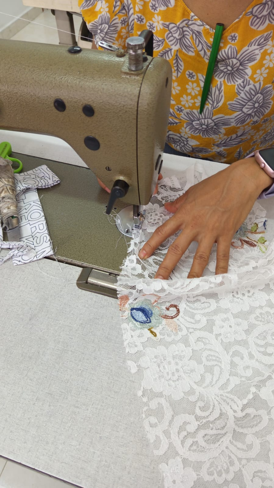
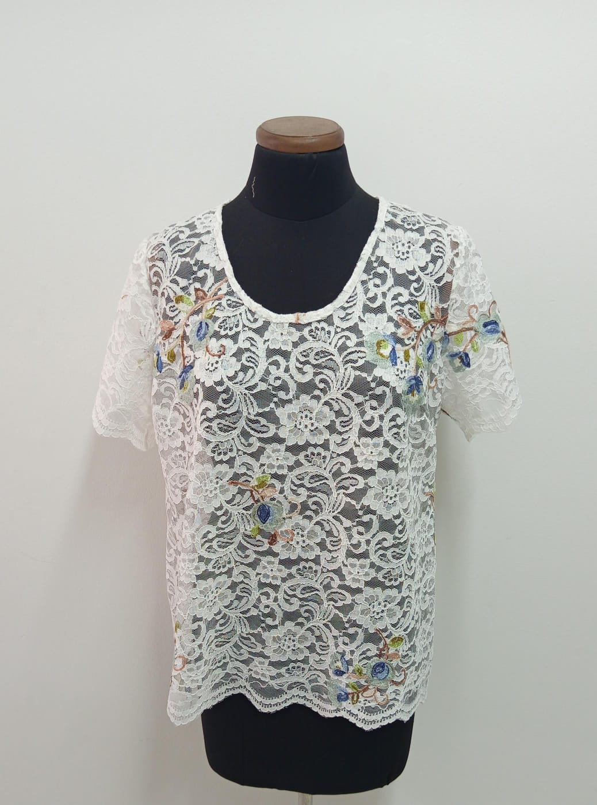
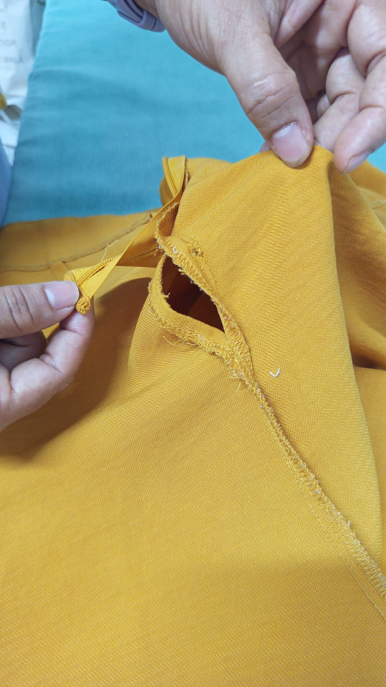
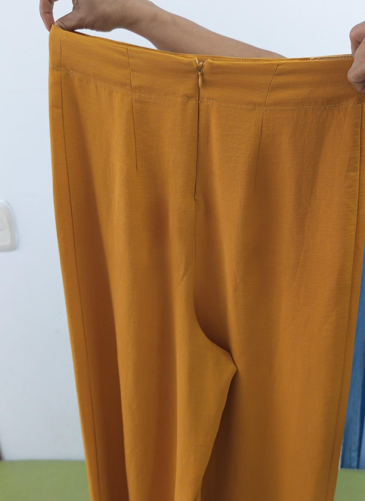

Sastrería Profesional
Entalle de pantalones, blusas y vestidos. Cambio de cierres, servicios de lavandería y tinturado.
Trabajo garantizado.
⭐⭐⭐⭐⭐ 5.0 Google Reviews
Arreglos de alta calidad con insumos de alta resistencia. No deseches tu ropa, dale una nueva vida con sastrería profesional.
Entalle de pantalones, blusas y vestidos. Cambio de cierres, servicios de lavandería y tinturado.
Trabajo garantizado.
Venta de hilos, botones, cierres, elásticos y accesorios de costura de alta calidad para tus proyectos.
Precisión técnica en cada costura y restauración.

Antes
Después
Antes
DespuésLun - Vie: 8:00 AM - 12:00 PM | 2:00 PM - 6:30 PM
Sábados: 8:00 AM - 4:00 PM
Dom y Festivos: Cerrado
avenida calle 105 # 21A-42, Bucaramanga, Santander